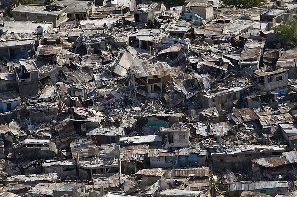
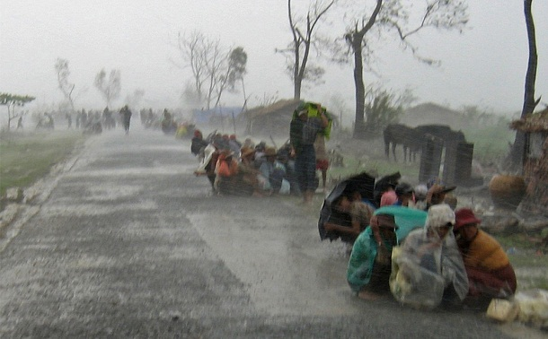
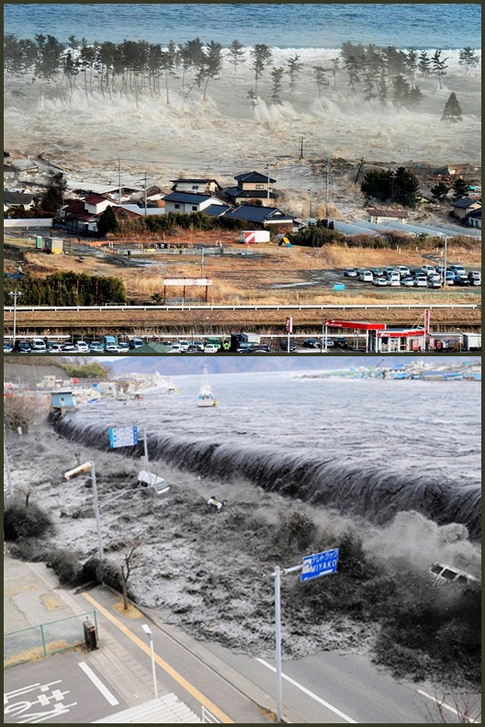
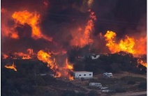
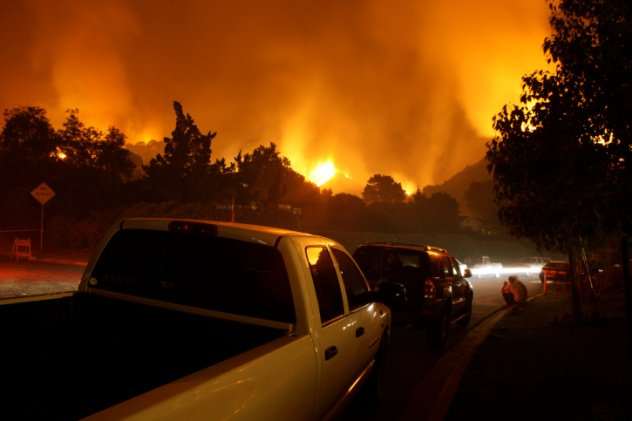
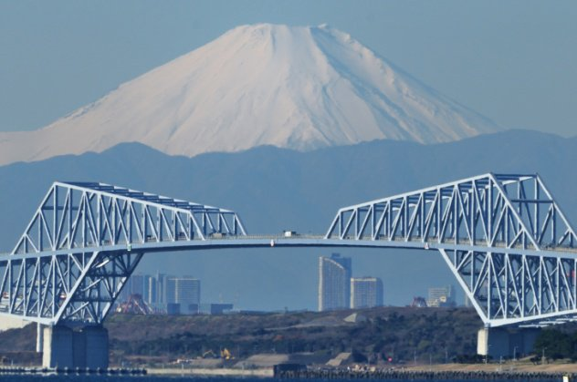
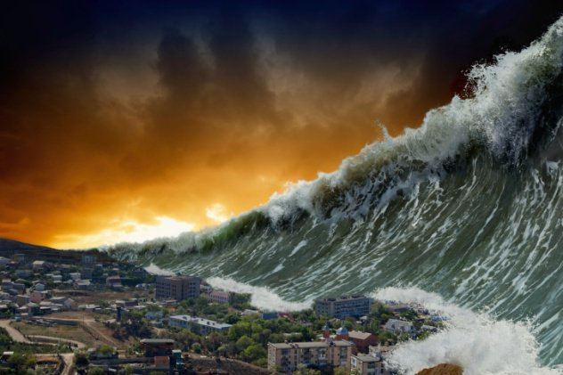
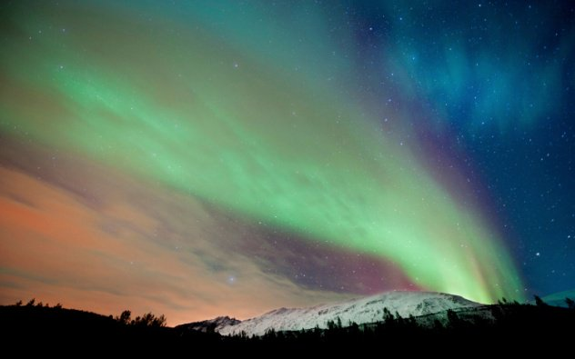

Worst Disasters Ever Recorded
Haiti Earthquake (2010)
A magnitude 7.0 earthquake with a depth of 8.1 miles rocked Haiti on January 12,2010.Its epicenter was located just south west of Port-Au-Price with 59 aftershocks ranging from 4.2 to 5.9 magnitudes in strength.The strongest earthquake to hit the country since 1770,it led to over 200,000 deaths, 2 million homeless,and 3 million people in need of emergency aid.At least US $195 million have been given with another US $120 million pledges from different countries, along with a large number of aid workers to help with rescue operations.
Cyclone Nargis (2008)
The first cyclone in 2008 to hit the northen Indian Ocean,Cyclone Nargis made landfall in Myanmar and devastated the Ayeyarwady Delta region along with its 37 townships for two days.Offical figures showed that 84,500 people were killed with 53,800 missing.An equivalent of a category 3 or 4 hurricane on the Saffir-Simpson scale, it led to numerous storm surges and flooding.
Tohoku Earthquake and Tsunami (2011)
A 9.0-9.1 magnitude quake followed by a tsunami hit the east coast of Japan in March 11,2011.With an underwater depth of 29km,this was the largest earthquake to ever strike Japan in recorded history. Document as the 4th most powerful eathquake in the world, it was responsible for the dealth of 15,849 people with 6,152 injured and 2,562 people missing.It also affected 20 prefectures,with over 127,000 buidings completely destroyed and over 272,000 buildings "half collapsed".
European Heat Wave (2003)
Europe is not too used to scroching hot summer so when the 2003 European heat wave struck,it resulted in a health crisis in several countries as well as drought which led to crop shortage,especially in Ukarine where 75% of wheat crops were lost.The hottest since 1540, at least 14,802 casualities recoreded in France alone with victims coming from old people in nursing homes,or sigle family homes with no air-conditioning systems.The extreme temperatures also dried up most of Europe, which resulted in forest fires and counterintuitively,even flooding.
California Wildfires
A series of wildfires blazed across California this year,burning more than half a million acres.According to the California Department of Forestry and Fire Protection, 6,938 fires had burned 565,070 acres (229,000 hectares) as of Dec.11.The Blue Cut wildfire for instance,burned through more than 37,000 acres (more than 12,000 hetares) in Southern California this summer and through the fall,according to the Los Angeles Times.The state's ligering drought has killed more than 100 million trees,according to the U.S Forest Serivice's latest aerial survey,leaving a "fuel buildup" that led to this season's longer,hotter fire season.The fires this year killed seven people,including one firefighter and damages are still being tallied.
Disasters Comming Future
Wildfires [US,2015-2050]
Environmental scientists from the Harvard School of Engineering and Applied Sciences (SEAS) predict that by 2050,wildfires seasons in the US will be three weeks longer,twice as smoky and will burn a larger portion of the West per year.Concurrently,the US Geological Survey and the Forest Service have reorded that since 1999,the acreage burned by wildfires in the US has tripled from 2.2 million to 6.4 million annually, meaning that much more of the US will be up in flames in the near furture.What has led to this dramatic increase in the US wildfire risk? The answer, according to SEAS,is gradual climate change,which has raised the Earth's temperature, creating conditions that spawn bigger and fiercer wildfires.With 30,000-50,000 wildfires predicted to occur annually, the US might soon be expericing its own version of Hell on Earth.
Mt.Fuji Eruption [Japan,2015-2053]
When the Tohoku earthquake shifted the landmass of Japan,20 of the 110 active volcanoes in Japan showed increased seismic activity,leading experts to believe one may erupt any day.The Japan Meteorological Agency(JMA) monitors sesismic activity and active volcanoes in Japan.Out of Japan's 110volcanoes,47 are considered "active",meaning they have erupted in the last 10,000 years or spew gses.Calculations show that Japan should have a major volcanic eruption every 38 years.On the list of 47 active Japanese volcanoes is Mt.Fuji,Japan's tallest volcano, standing at 3,773 meters (12,380 ft).In July 2014,a french and Japanese scientific team released a report claiming that Mt.Fuji is among the volcanoes most likely to erupt,causing concern for many Japanese citizens. If Mt.fuji erupted,the team predicts that it would necessitate the emergency evacuation of 750,000 people from Tokyo.The city would most likely be covered in ash.
Largest Tsunami Ever [Caribbean,Unknown]
Dr.Simon Day of University College London and Dr.Steven Ward from the University of California Santa Cruz predict that the Cumbre Vieja volcano on the Canary Islands will erupt and create the largest trsunami in recorded history.In their jointly written and released paper on the topic in 2001,Dr.Day and Dr.Ward hypothesize that rupture in the volcano's structure occurred during its last eruption,causing the left side to have become particularly unstable. They have deduced thar the monstrous wave will travel 800 kilometers per hour (500 mph),be 100 meters (330ft) tall upon first impact with land and will reach Florida within nine hours of being created.Dr.Day and Dr.Ward predict that tsunamis will hit faraway placs such as England,Florida and the Caribbean.
Major Solar Storm [2015-2025]
The biggest natural disaster that could affect Earth in the near furture doesn't even originate from our planet;it comes from the Sun.The Sun has an "activity cycle",which means that it has either decreased or increased activity,such as solar flares and sunspots,depending on its time in a particularly cycle.The most recent major burst of solar acitcity occurred in July 2012.The 2012 solar flare hit the space station but was only a week's time away from hitting Earth instead.This lucky miss for Earth may not repeat itself in the near future according to Pete Riley,a scientist at Prdictive Science,Inc.After analyzing solar storm records from the past 50 years,his calculations concluded that there is a 12 percent chance of a major solar hitting Earth in the next 10 years. If this were to happen,it would potentially interfere with radio,GPS and satellite communications,affecting the use of millions of electronics around the world.